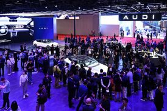

Шанхайский автосалон 2025 — 21-я международная выставка автомобильной промышленности (англ. Auto Shanghai 2025), которая прошла в Национальном выставочном и конференц-центре в Шанхае (англ.Shanghai National Exhibition & Convention Center)[1]
